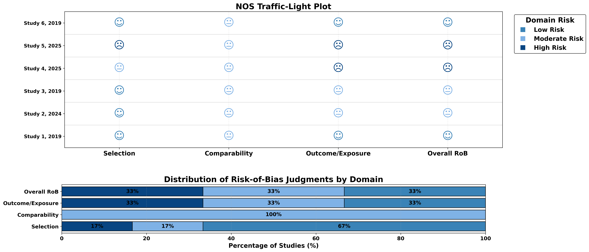
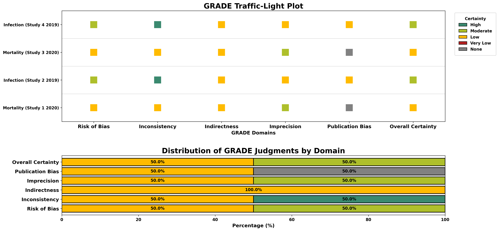
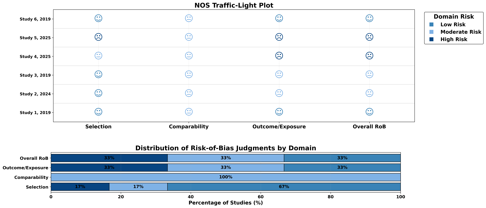
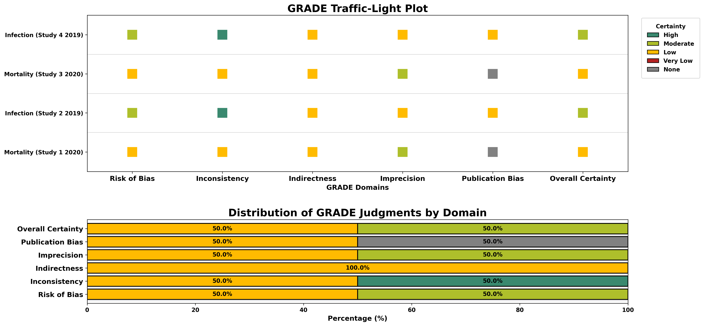

About Critiplot
Critiplot is a comprehensive web tool for visualizing multiple risk-of-bias assessment tools.
It helps researchers generate traffic light plots and weighted bar plots for various assessment methodologies including NOS, GRADE, ROBIS, and JBI tools.
Built on Python, it complements evidence synthesis workflows while ensuring reproducibility and consistent visualization of your datasets.
Critiplot supports the following assessment tools:
- NOS (Newcastle-Ottawa Scale) - For assessing the quality of non-randomized studies
- GRADE - For rating the certainty of evidence in systematic reviews
- ROBIS - For assessing risk of bias in systematic reviews
- JBI Case Report - For critical appraisal of case reports
- JBI Case Series - For critical appraisal of case series
Key features of Critiplot include:
- Generation of intuitive traffic light plots for each study's risk-of-bias assessment.
- Weighted bar plots to summarize overall domain-level distributions across studies.
- Multiple visualization themes for each assessment tool.
- Publication-ready visualizations suitable for manuscripts, presentations, and reports.
- Open-source design to facilitate reproducibility and transparency in evidence synthesis.
With Critiplot, researchers can quickly interpret and communicate study-level risk-of-bias information across multiple assessment frameworks, ensuring both clarity and scientific rigor.


 





Data Structure for Assessment Tools
Data Templates
Download ready-to-use templates for each assessment tool. Simply click to download the CSV or Excel format.
NOS
GRADE
ROBIS
JBI Case Report
JBI Case Series
NOS (Newcastle-Ottawa Scale)
To work correctly with Critiplot for NOS assessments, your uploaded table should follow this structure:
- First column: Study details (Author, Year)
- Domain columns: Each additional column corresponds to a specific NOS domain:
- Representativeness
- Non-exposed Selection
- Exposure Ascertainment
- Outcome Absent at Start
- Comparability (Age/Gender)
- Comparability (Other)
- Outcome Assessment
- Follow-up Length
- Follow-up Adequacy
- Total Score: Sum of the domain scores
- Overall RoB: Overall risk-of-bias judgement for each study (Low, Moderate, High)
| Author, Year | Representativeness | Non-exposed Selection | Exposure Ascertainment | Outcome Absent at Start | Comparability (Age/Gender) | Comparability (Other) | Outcome Assessment | Follow-up Length | Follow-up Adequacy | Total Score | Overall RoB |
|---|---|---|---|---|---|---|---|---|---|---|---|
| Study 1, 2019 | 1 | 1 | 1 | 1 | 1 | 0 | 1 | 1 | 1 | 8 | Low |
| Study 2, 2024 | 1 | 1 | 1 | 1 | 1 | 0 | 1 | 1 | 0 | 7 | Moderate |
GRADE
For GRADE assessments, your uploaded table should follow this structure:
- Outcome: Name of the outcome
- Study: Study identifier
- Risk of Bias: Risk of bias judgement (High, Moderate, Low, Very Low, None)
- Inconsistency: Inconsistency judgement (High, Moderate, Low, Very Low, None)
- Indirectness: Indirectness judgement (High, Moderate, Low, Very Low, None)
- Imprecision: Imprecision judgement (High, Moderate, Low, Very Low, None)
- Publication Bias: Publication bias judgement (High, Moderate, Low, Very Low, None)
- Overall Certainty: Overall certainty judgement (High, Moderate, Low, Very Low)
| Outcome | Study | Risk of Bias | Inconsistency | Indirectness | Imprecision | Publication Bias | Overall Certainty |
|---|---|---|---|---|---|---|---|
| Mortality | Study 1 2020 | Low | Low | Low | Moderate | None | Low |
| Infection | Study 2 2019 | Moderate | High | Low | Low | Low | Moderate |
ROBIS
For ROBIS assessments, your uploaded table should follow this structure:
- Review: Review identifier
- Study Eligibility: Risk of bias judgement (Low, Unclear, High)
- Identification & Selection: Risk of bias judgement (Low, Unclear, High)
- Data Collection: Risk of bias judgement (Low, Unclear, High)
- Synthesis & Findings: Risk of bias judgement (Low, Unclear, High)
- Overall Risk: Overall risk of bias judgement (Low, Unclear, High)
| Review | Study Eligibility Criteria | Identification & Selection of Studies | Data Collection & Study Appraisal | Synthesis & Findings | Overall RoB |
|---|---|---|---|---|---|
| Study 1 2021 | Low | High | Unclear | Low | High |
| Study 2 2020 | Low | Low | Low | Low | Low |
JBI Case Report
For JBI Case Report assessments, your uploaded table should follow this structure:
- Author,Year: Study identifier (e.g., "Smith, 2020")
- Demographics: Score (0 or 1)
- History: Score (0 or 1)
- ClinicalCondition: Score (0 or 1)
- Diagnostics: Score (0 or 1)
- Intervention: Score (0 or 1)
- PostCondition: Score (0 or 1)
- AdverseEvents: Score (0 or 1)
- Lessons: Score (0 or 1)
- Total: Sum of the domain scores
- Overall RoB: Overall risk of bias judgement (Low, High)
| Author,Year | Demographics | History | ClinicalCondition | Diagnostics | Intervention | PostCondition | AdverseEvents | Lessons | Total | Overall RoB |
|---|---|---|---|---|---|---|---|---|---|---|
| Study 1,2022 | 1 | 1 | 0 | 1 | 1 | 1 | 1 | 1 | 7 | Low |
| Study 2,2021 | 1 | 0 | 0 | 1 | 0 | 0 | 0 | 1 | 3 | High |
JBI Case Series
For JBI Case Series assessments, your uploaded table should follow this structure:
- Author,Year: Study identifier (e.g., "Smith, 2020")
- InclusionCriteria: Score (0 or 1)
- StandardMeasurement: Score (0 or 1)
- ValidIdentification: Score (0 or 1)
- ConsecutiveInclusion: Score (0 or 1)
- CompleteInclusion: Score (0 or 1)
- Demographics: Score (0 or 1)
- ClinicalInfo: Score (0 or 1)
- Outcomes: Score (0 or 1)
- SiteDescription: Score (0 or 1)
- Statistics: Score (0 or 1)
- Total: Sum of the domain scores
- Overall RoB: Overall risk of bias judgement (Low, High)
| Author,Year | InclusionCriteria | StandardMeasurement | ValidIdentification | ConsecutiveInclusion | CompleteInclusion | Demographics | ClinicalInfo | Outcomes | SiteDescription | Statistics | Total | Overall RoB |
|---|---|---|---|---|---|---|---|---|---|---|---|---|
| Study 1,2022 | 1 | 1 | 1 | 1 | 1 | 1 | 1 | 1 | 1 | 1 | 10 | Low |
| Study 2,2021 | 1 | 0 | 1 | 1 | 0 | 1 | 0 | 1 | 0 | 0 | 5 | High |
Support & Contact
Have questions or need assistance with Critiplot? This tool is designed for reproducible research, and we are here to help you integrate it into your workflow.
You can open a GitHub Issue or send an email directly for guidance, troubleshooting, or feature requests.
Citation
If you use Critiplot to create risk-of-bias plots for your study, please remember to cite the tool.
Sahu, V. (2025). Critiplot: Visualization Tool for Risk of Bias Assessments (v1.0.0). Zenodo. https://doi.org/10.5281/zenodo.17065215